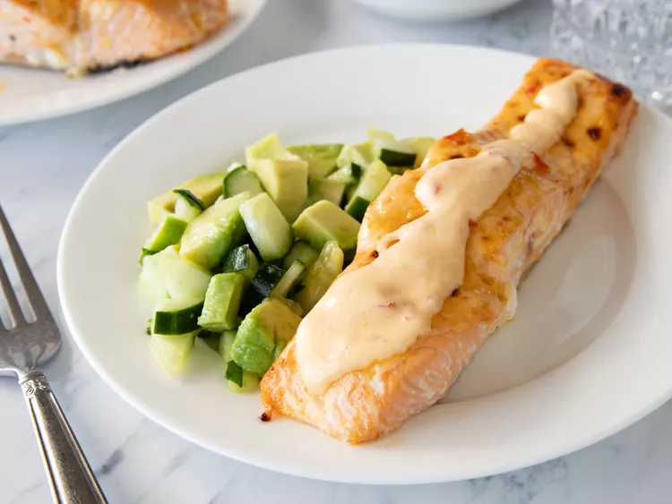

Home
Bang Bang Salmon

This bang bang salmon, an easy, sweet-spicy sheet pan preparation, is
accompanied by a quick cucumber avocado salad. Serve over rice if you
like.
Ingredients
- 2 (8 ounce) salmon filets
- 1/8 teaspoon salt
- 1/4 cup mayonnaise
- 1 tablespoon sweet chili sauce
- 1 teaspoon chile garlic sauce, such as Sriracha
- 1 small cucumber, chopped
- 1 avocado, chopped
- 1 tablespoon chopped cilantro
- 1 1/2 teaspoons salt
- 1 teaspoon lime juice
Steps
-
Gather all ingredients. Preheat the oven to 400 degrees F (200 degrees
C). Line a large baking sheet with parchment paper.
-
Place salmon filets on the prepared baking sheet and sprinkle with 1/8
teaspoon salt.
-
Whisk mayonnaise, sweet chili sauce, and Sriracha (R) together in a
small bowl. Spoon half of sauce over filets; reserve remaining sauce for
serving.
-
Bake salmon in the preheated oven for 8 minutes. Turn broiler on High
and broil until fish flakes easily with a fork, about 6 minutes.
-
Meanwhile, for salad, combine cucumber, avocado, cilantro, 1 1/2
teaspoons salt, and lime juice in a separate bowl.
-
Drizzle reserved sauce over salmon, and serve with cucumber salad.